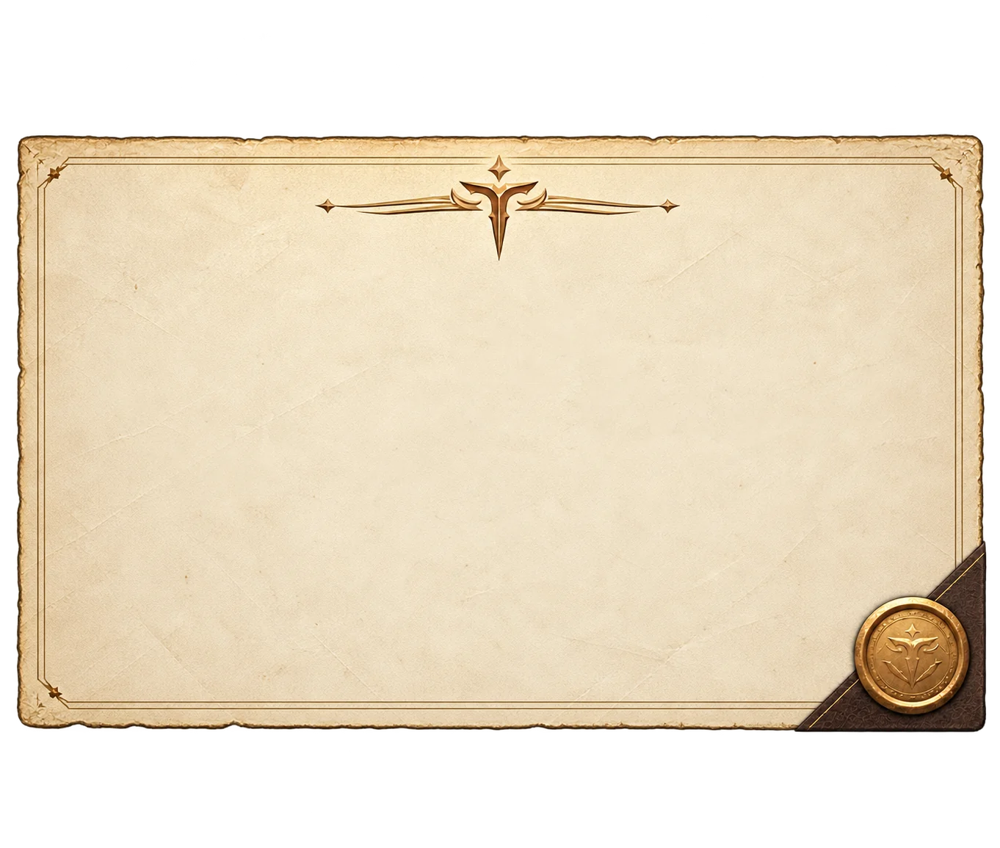

모험가님께.
잊혀진 신의 성당
이름이 지워진 신의 성당에서 선발대가 실종됐습니다.
토벌대 진입로와 옛 순례자의 계단은 정면 입구로 이어집니다. 두 길에서 선발대의 흔적을 찾아 주십시오.
성당 내부의 장치와 기록을 조사하십시오. 기존 보고와 다르다면 현장에서 확인한 사실을 우선해 주십시오.
후속 조사 지령서
LEVEL DESIGN PORTFOLIO
01
실제 UE5 Graybox GLB를 직접 회전·확대하며 공간 구조를 확인하는 보조 뷰어.
02
프로젝트별 역할을 분리하고, PDF·영상·3D Viewer를 필요에 따라 연결할 수 있도록 구성.
03
LEVEL DESIGN APPROACH